STORAGE-MARKETS
| Field | Value |
|---|---|
| Name | Storage Markets |
| Slug | 205 |
| Status | raw |
| Category | Standards Track |
| Editor | Juan Pablo Madrigal-Cianci jp@logos.co |
| Contributors | Frederico Teixeira frederico@logos.co, Filip Dimitrijevic filip@logos.co, Marcin Pawlowski marcin@logos.co |
Timeline
- 2026-08-26 —
b655e4b— [RFC] Block Rewards: Replace Burning/Minting with Pooling/Distributing/Releasing (#375) - 2026-07-28 —
38916aa— docs(blockchain): prevent execution and storage fees from rounding down to zero (#384) - 2026-07-27 —
628684e— docs(blockchain): fix CHANNEL_DEPOSIT execution, block limits and storage market formatting (#381) - 2026-07-03 —
709cf7f— Bedrock-RFC: Remove Concept of a Session (#365) - 2026-05-29 —
67e498e— chore: fix math issues (#350) - 2026-05-28 —
d45eed2— Chore: mirror blochain specs into github/mdbook (#347)
Revisions History
| Version | Changes | Date |
|---|---|---|
| 1.0.0 | Initial revision. | 2026-04-24 |
| 1.0.1 | [RFC] Remove Concept of a Session | 2026-06-22 |
| 1.0.2 | Fix invalid python indentation due to github migration | 2026-07-27 |
| 1.1.0 | Round the price update upwards and align the reference code with the zero target guard | 2026-07-28 |
| 1.1.1 | Changing from burning/minting to pooling/distributing/releasing | 2026-08-25 |
Disclaimer: This material, including any linked pages or documents, is provided for informational purposes only. It does not constitute investment advice, a solicitation, or an offer to buy or sell any securities, tokens, or other financial instruments, nor should it be construed as legal, financial, or tax advice.
All information regarding project details, token design, distribution mechanisms, technical parameters, and any forward-looking statements is preliminary and subject to change without notice. No representations or warranties are made as to the completeness or accuracy of the information herein.
Nothing in this material should be relied upon for investment or business decisions. Recipients of this information assume all risks associated with its use and are responsible for seeking independent professional advice regarding any actions based on it.
Introduction
This document provides the formal specification for the fee collection mechanism of the Permanent Storage market. The primary objective is to define a system that is robust, predictable, and economically sustainable. This mechanism is a critical component of the overall Permanent Storage Market Transaction Fee Mechanism (TFM), a usage-driven market whose price formation is self-contained and independent of the protocol's core consensus and privacy services. The fees it collects are routed into the shared rewards pool that funds leader and Blend rewards, as detailed in Fee Routing below.
In what follows, Logos Blockchain Storage refers to the Permanent Storage markets and Logos Blockchain Storage Gas refers to the Permanent Storage Gas respectively.
Requirements and Rationale
The mechanism is designed with the following core requirements, derived from the project's goals:
- Predictability: Consumers of the Logos Blockchain Storage require a high degree of cost predictability for their own operational planning.
- Robustness: The mechanism must be able to adapt to significant, medium-term shifts in demand without requiring constant, emergency governance intervention.
- Fairness: The fee paid by a user must be directly and transparently proportional to the resources they consume.
- Simplicity: The on-chain implementation should be as simple as possible to minimize attack surface and ensure auditability.
Justification. As will be discussed later, the tradeoff between adaptability and predictability of the mechanism is determined by its parameters. In scenarios of high volatility, its core design principle is to act as a shock absorber, deliberately filtering out high-frequency, transient volatility by operating over longer timeframes and using a smoothed moving average (EMA). For the primary consumer, reacting to every momentary spike in demand would create untenable price chaos. This model, therefore, intentionally forgoes instantaneous adaptation in favor of providing crucial timeframe-level price certainty, ensuring that fees reflect meaningful, medium-term trends rather than reacting to volatile, short-term market noise.
Overview
The proposed fee mechanism operates on a simple but powerful principle: the price for Logos Blockchain Storage is fixed and predictable within a given timeframe (epoch for Permanent Storage), but it adjusts smoothly between timeframes based on observed network usage.
When a user submits data, a fee is calculated based on the Logos Blockchain Storage Gas consumption. This fee is determined by a price per Gas, , which is known in advance for the entire timeframe. The collected fee is routed in full into the network's shared rewards pool, the same pool that funds block rewards (see Fee Routing).
At the end of each timeframe, the protocol tallies the total amount of Logos Blockchain Storage Gas that was stored. It compares this actual usage to an adaptive target a "healthy" usage level that is itself a dynamic blend of a long-term policy goal and recent historical usage. Based on whether the actual usage was above or below this target, the price for the next timeframe is adjusted slightly up or down.
This flow can be visualized as follows:

This model provides the best of both worlds: users have perfect price clarity for the duration of a timeframe, while the system as a whole can gracefully adapt to evolving market conditions over time.
Construction
This section defines the precise algorithm, constants, and state variables for the Logos Blockchain Storage TFM.
Core Fee Equation
The fee for a Logos Blockchain Storage transaction, , is a linear function of Logos Blockchain Storage Gas' size, , and the price-per-gas for the current timeframe, .
As a remark, the equation above assumes a linear increase of with respect to . For completeness, a more general version can be
with a monotonically increasing function. Making f sublinear can be understood as accounting for economies of scale, while making superlinear can be understood as a penalization for using larger data sizes. We decided to go with the linear form of as it was the least opinionated. Examples of this could be
Fee Routing
Each Logos Blockchain Storage fee is routed in full into the network's shared rewards pool at the moment its transaction is included, rather than paid to any participant or removed from supply. This is the same pool fed by the Execution Market and drawn down to pay leaders and Blend nodes.
Aggregated over a block, the Storage fees of its transactions form the Storage-market component of the per-block pool inflow used to compute block rewards:
where is the set of transactions in the block, is the Logos Blockchain Storage Gas consumed by transaction , and is the fixed price of the enclosing timeframe . The Execution market contributes the remaining component of , the pooled base fees (cf. Execution Market), giving . This pooled inflow is distributed to leaders and Blend nodes through the reward mechanism of Block Rewards. The Storage market governs only the price ; the routing and subsequent distribution of the resulting fee are defined by the block-reward mechanism.
Protocol Constants
To ensure on-chain efficiency, the protocol shall use an Exponential Moving Average (EMA) for its adaptive target calculation. The behavior of the TFM is governed by the following on-chain constants, which are set at genesis.
| Symbol | Name | Description | Initial Value | Justification |
|---|---|---|---|---|
| Baseline Target | A static, policy-driven usage target in Logos Blockchain Storage Gas per timeframe. Acts as a long-term gravitational anchor for the dynamic target. | 0 Permanent Storage Gas per block. | It should represent a conservative initial timeframe capacity. providing a healthy buffer and a clear policy goal. | |
| Anchor Weight | A coefficient in determining the influence of . It's the "gravity knob" for the system. | for Permanent Storage: 0 | Allows the target to be primarily driven by recent demand, ensuring adaptability, while the % pull from prevents long-term drift. | |
| Max Adjustment Factor | The maximum fractional amount the price can change per timeframe. Acts as "safety brakes" to bound price volatility. | 0.125 for Permanent Storage | A % cap provides strong predictability for users planning across timeframes while allowing the price to respond effectively to sustained demand changes. | |
| EMA Smoothing Factor | A coefficient in controlling the responsiveness of the usage EMA. It governs the speed of adaptation. | 0.5 for Permanent Storage | A value of gives significant weight to the most recent timeframe's usage while incorporating the "memory" of the system with a half-life of 1 timeframe, balancing responsiveness and stability. | |
| Initial Usage EMA | First value for EMA | 0 (=) | Given , this is the least opinionated choice: with no prior usage data at genesis, a neutral prior of zero makes no assumption about initial market activity and anchors the EMA to the long-term policy goal from the outset. | |
| Initial Price | The price on the first epoch | 1 LGO/gas | The initial price is set conservatively low at the beginning and let to discover the true market price | |
| timeframe | How often things adjust | 1 epoch | Primary users of the Storage market plan operational costs over days or weeks, not block-by-block. |
Parameter Justification
-
For simplicity, we set as an anchor and as blocks are already constrained by execution. This is to avoid imposing an opinionated choice of parameters, specially at the beginning of the protocol.
-
The EMA factor () makes the adaptive target highly sensitive to recent network activity by giving 50% weight to the latest epoch's usage, creating an effective "memory" of approximately 3 epochs.
-
The maximum adjustment factor () provides a crucial layer of predictability, guaranteeing users that the price cannot change by more than 12.5% between any two epochs, thus fulfilling a core design requirement for stable operational planning.
-
The seed value for the EMA is set to . Given , this is the least opinionated choice: with no prior usage data at genesis, a neutral prior of zero makes no assumption about initial market activity and anchors the EMA to the long-term policy goal from the outset.
Why is the index , not ? The price update algorithm runs at the end of timeframe and requires as its prior EMA value. When , the algorithm therefore requires as its seed. The value is already a well-defined computed quantity the EMA produced after the first epoch's observed usage: . Using index for the seed avoids a naming collision with this computed value. Implementation note. With and , the effective target will be zero during the first epoch unless . The reference implementation handles this correctly via the
if usage == 0: return prev_priceguard, which holds the price at until the first non-zero usage epoch provides a meaningful signal. This is the intended behavior at genesis. -
The precise value of is not critical to the long-term behavior of the mechanism. As established in the equilibrium analysis, the price update rule converges autonomously to the market-clearing price regardless of the starting point, provided the stability condition holds (see [Analysis] Storage Market - Price Stability Analysis). The only hard requirement is for to be sufficiently low so as not to suppress early adoption before the mechanism has observed enough demand to self-correct.
More precisely, since the price can increase by at most per epoch, the number of epochs required to reach a target price from an initial price is bounded above by .
For example, if is set to one tenth of the true equilibrium price, the mechanism reaches within at most epochs. Starting one hundredth below requires at most epochs. Both are negligible relative to the expected lifetime of the network. We therefore set .
This corresponds to a cost of 1 LGO per permanently stored byte. Genesis governance may adjust this value based on the LGO price at TGE, but the adjustment has no long-term consequence: the mechanism will converge to the true market price within epochs regardless.
-
The timeframe corresponds to one epoch. The core reason is that the primary users of the Storage market plan operational costs over days or weeks, not block-by-block. An epoch-length timeframe provides price certainty over hundreds of blocks, directly fulfilling the predictability requirement. It also ensures the EMA aggregates a meaningful volume of usage data before influencing the price, rather than reacting to per-block noise.
State Variables
The protocol must maintain the following state variables, updated at the end of each timeframe:
| Symbol | Name | Description |
|---|---|---|
| Price Per Logos Blockchain Storage Gas | The price per Gas of storage for the current timeframe . | |
| Usage EMA | The Exponential Moving Average of storage usage, updated with the usage from timeframe . |
Price Update Algorithm
At the conclusion of each timeframe , the protocol shall execute the following algorithm to determine the price for the next timeframe, . This is done as follows.
-
Tally Usage: Aggregate the total Logos Blockchain Storage Gas consumed during timeframe into a final value, , where corresponds to one block in timeframe and corresponds to the Logos Blockchain Storage Gas used by transaction .
-
Update Usage EMA: Update the Exponential Moving Average of usage:
-
Calculate Effective Target: Calculate the blended, effective target,
-
Calculate Adjustment Factor: Determine the fractional deviation of usage from the target and clamp the result to the range :
- Update Price: Calculate the price for the next timeframe, :
Implementation
Because computation affect consensus state, the implementation must be fully deterministic across all nodes. For that reason, the normative implementation of the reward function should not rely on floating-point arithmetic, machine-dependent rounding behavior, or comparisons against machine epsilon. Earlier sections use real-valued formulas to explain the mechanism and its economic meaning, but the consensus rule itself should be defined only in terms of integer arithmetic.
The goal of this section is not to change the execution mechanism. It is only to restate the already-specified mechanism in a canonical deterministic form with explicit named constants. To we provide here a reference implementation that uses unsigned integers to have a common reference.
First because we have , . Then because
Secondly, we can rewrite equation:
and so:
The first case is the genesis guard discussed in the parameter justification: an effective target of zero carries no demand signal, so the price is held until the first epoch with a non-zero usage EMA. In the three adjustment cases the price is rounded upwards, while the usage EMA is rounded downwards, and so we can derive the following reference code:
EMA_DENOMINATOR = 2 # 1/beta
CLAMP_DENOMINATOR = 8 # denominator of 1+ alpha and 1-alpha
CLAMP_DOWN_NUMERATOR = 7 # numerator of 1-alpha
CLAMP_UP_NUMERATOR = 9 # numerator of 1+alpha
def ceil_div(numerator: int, denominator: int) -> int:
return (numerator + denominator - 1) // denominator
def update_usage(total_gas_consumed: int, previous_usage: int) -> int:
return (total_gas_consumed + previous_usage) // EMA_DENOMINATOR
def update_storage_price(prev_price: int, total_gas_consumed: int, usage: int) -> int:
if usage == 0:
return prev_price
elif CLAMP_DENOMINATOR * total_gas_consumed <= CLAMP_DOWN_NUMERATOR * usage:
return ceil_div(prev_price * CLAMP_DOWN_NUMERATOR, CLAMP_DENOMINATOR)
elif CLAMP_DENOMINATOR * total_gas_consumed >= CLAMP_UP_NUMERATOR * usage:
return ceil_div(prev_price * CLAMP_UP_NUMERATOR, CLAMP_DENOMINATOR)
else:
return ceil_div(prev_price * total_gas_consumed, usage)
def update_storage_fee(total_gas_consumed: int, prev_price: int, prev_usage: int) -> tuple[int, int]:
usage = update_usage(total_gas_consumed, prev_usage)
price = update_storage_price(prev_price, total_gas_consumed, usage)
return price, usage
The two rounding directions are not interchangeable. The price is multiplied by a factor smaller than one whenever usage falls below the target, so rounding it downwards would make 0 an absorbing state: the initial price would be mapped to 0 by the first downward adjustment, and every subsequent update would keep it at 0, making Permanent Storage permanently free. Rounding upwards makes 1 LGO per Permanent Storage Gas the effective floor of the price and leaves the mechanism unchanged at every other price level, as the rounding error is at most one unit against an adjustment of up to . The usage EMA is a measurement rather than a price and is not subject to this failure mode, as it is additive and recovers from 0 as soon as usage resumes. Rounding it upwards would instead pin it at 1 once it has been positive, reporting residual demand on an idle market.
Genesis State
The initial state of the TFM at network launch shall be configured as follows:
- Initial Price P_STR(0): Set to a pre-determined value established by genesis governance.
- Initial Usage EMA T_RA(-1): Set to the value of the baseline target, . This anchors the mechanism to its long-term policy goal from the outset.